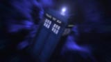

| HOME | Episódios | Galeria de Fotos | Downloads | Jogo | Personagens | Entrevista |
Entrevistas |
||
Christopher
Eccleston |
 | Russell T Davies / Julie GardnerProdutores Executivos |
|
A persistência rendeu para Russel T. Davies quando, depois de recusar a fazer qualquer coisa para a BBC que não fosse o retorno de Doctor Who, seu sonho se tornou realidade. Uma nova temporada, com 13 episódios, da série do lendário Doutor viajando pelo tempo e espaço recebeu o OK no final de 2003, com Russel no quadro como roteirista principal e coprodutor executivo, junto à recém instituída diretora de séries da BBC Wales, Julie Gardner. Um dos maiores talentos da TV britânica, Russel também é um fanático por Doctor Who, mas admite que teve de parar para pensar um pouco antes de se dedicar completamente a trazer de volta a série 15 anos depois da última temporada. “Eu passei três dias pensando bastante a respeito”, ele conta. “Eu amo Doctor Who, e parte de mim pensou: ‘se você ama algo, talvez seja melhor você o deixar em paz’. Mas foram três dias pensando bobagem, e meus amigos ficavam me pressionando, dizendo ‘não seja idiota, é claro que você precisa fazer isso!’” Julie já havia trabalhado com Russel na ITV, então quando perguntaram se ela gostaria que Doctor Who fosse o primeiro projeto dela como diretora, ela disse ‘sim!’ e ligou para Russel no mesmo momento. “Ele não disse ‘sim’ imediatamente”, confirma Julie. “Mas era tão óbvio para todo mundo que Russel era perfeito para aquilo que logo estávamos trabalhando nos roteiros e começando a pré-produção.” Destaques da carreira de Russel incluem seriados primiados como Queer as Folk, Bob and Rose e The Second Coming, esse último estrelando o homem que mais tarde se tornaria o novo Doutor; Christopher Eccleston. Mas, muito antes de Christopher ser escolhido, junto a Billie Piper como a companheira do Doutor, Russel já sabia que rumo a série tomaria. “A palavra-chave é diversão”, ele conta. “É engraçado, assustador, cheio de ação e aventuras. Mas, acima de tudo, o Doutor é divertido. Eu assisto a muitos programas de ficção científica, e eles tendem a ser sombrios, escuros, até mesmo angustiantes. E isso seria uma sentença de morte para um programa de sábado à noite. As pessoas querem se divertir nesse momento, então Doctor Who é uma série divertida e agitada, que leva os telespectadores para uma montanha-russa.” Julie lembra que as inúmeras possibilidades que Doctor Who cria são outra grande atração: “Não há história que não possa ser contada”, diz. “A série pode ir a qualquer lugar no espaço e no tempo, e os personagens principais são um alienígena e uma humana, com todas as confusões que isso possa trazer. Dá para ver claramente porque isso atrai as pessoas. Mas sem a qualidade dos roteiros de Russel e nossos outros escritores – Mark Gatiss, Steven Moffat, Robert Sherman e Paul Cornell – não poderíamos conseguir atores como Simon Callow, Richard Wilson, Penelope Wilton e Simon Pegg como convidados. Russel ainda soa surpreso quando lembra como Christopher o contatou para dizer que estava muito interessado em fazer o papel principal. “Eu não achava que Christopher estaria interessado”, ele admite. “Mas não é nenhum segredo que ele é conhecido por papéis mais sérios, e acho que interpretar o Doutor é uma forma de mostrar um lado diferente de Christopher. Há muita diversão e humor na interpretação, mas é claro que quando o Doutor está bravo ou empenhado, podemos ver o outro lado de Christopher, que o fez um dos melhores atores britânicos.” O Doutor feito por Christopher de jaqueta, com seu próprio sotaque de Manchester, é mais “real”, mais “pé no chão” que seus antecessores, mais extravagantes. “Sem gracinhas”, como Russel descreve. “Os primeiros episódios foram escritos antes de Christopher ser escolhido, mas por um feliz acaso, meu modelo do personagem encaixou-se perfeitamente, e Chris também fez suas contribuições no decorrer da série.” Julie completa: “Christopher sempre fez papéis muito intensos, dramáticos, e até mesmo trágicos. Então, o Doutor lhe dá a chance de ser intenso e, ao mesmo tempo, leviano. Ele faz o papel com uma enorme energia, e há uma relação muito boa entre ele e Rose.” Julie conta que quando Billie fez o teste para ser a companheira do Doutor, não houve dúvidas. “No momento em que ela entrou no estúdio, nós a amamos. Há algo muito real nela. Ela tem glamour, ela é linda e tem um espírito que combina muito com o de Rose”, conta Julie. “Ela é perfeita para o papel, e ela e Christopher trabalham tão bem juntos. Acho que há uma verdadeira química entre eles.” Russel acredita que outro ponto-chave em Doctor Who é a relação entre o passado, que inspirou lealdade e devoção em seus fãs ao longo de 40 anos, e o potencial sem limites do presente. “A diferença principal entre o velho Doutor e o novo Doutor é simplesmente que esse foi feito em 2005”, ele diz. “É fiel à antiga série, mas ao mesmo tempo é um programa completamente novo, com um novo público-alvo.” |
||